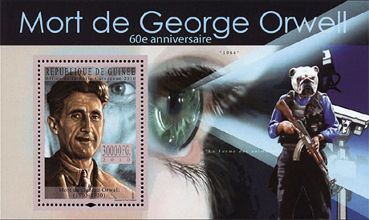
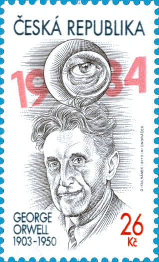
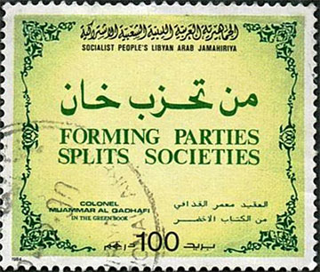
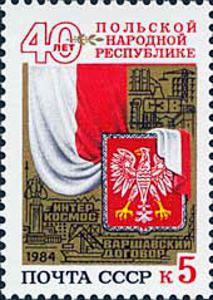
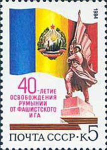
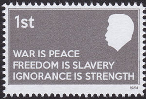
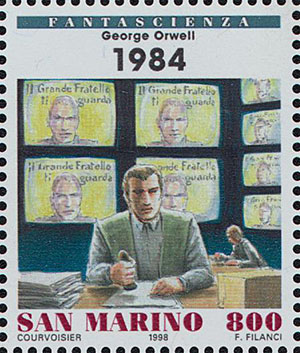

GEORGE ORWELL
Birth Anniversary - 100 Years
Under the spreading chestnut tree
I sold you and you sold me. "1984"
Eric Arthur Blair (25 June 1903 – 21 January 1950), known by his pen name George Orwell, was an English novelist and journalist.
Modern readers are more often introduced to Orwell as a novelist, particularly through his enormously successful titles Animal Farm and Nineteen Eighty-Four. The former is often thought to reflect degeneration in the Soviet Union after the Russian Revolutionand the rise of Stalinism; the latter, life under totalitarian rule.
Orwell's work continues to influence popular and political culture, and the term Orwellian — descriptive of totalitarian or authoritarian social practices — has entered the language together with several of his neologisms, including Cold War, doublethink, thoughtcrime, Big Brother and thought police. Source
In 1984 Solidarnosc “…issued a clandestine Orwell stamp, illegal calendars and suppressed editions of Animal Farm and Nineteen Eighty-Four…” (Jeffrey Meyers, Orwell). Source
I read "1984" in the mid of the 1970th, a book that illegally crossed the border of the then communist Romania. It was the first book in English that I read, by using a dictionary for each 3rd to 4th words. The resemblances with the life in Romania where so sticking that some sentences stuck in my mind forever, like the examples cited below:
- The rewriting of history, typical for thepast communists history books
Who controls the past, controls the future.
Who controls the present, controls the past.- The doublethink, the act of simultaneously accepting two mutually contradictory beliefs as correct
War is peace.
Freedom is slavery.
Ignorance is strength.Few stamps are dedicated to the memory of George Orwell. In 2010 the Guinea Republic issued a beautiful miniature sheet dedicated to the 60th anniversary of Orwell's death. Ironically maybe, because: "In its 2012 Freedom in the World report, Freedom House named the country "partly free" for the second year in a row, an improvement over its former status as one of the least free countries in Africa." Source.

In 2013 the Czech Republic, a former communist party, and now a fully free one, issued a stamp dedicated to the 100th death anniversary of the artist. The powerful motif of the permanently observing eye of the Big Brother is present on this stamps as well.

We present several stamps, all of them issued during the Orwellian 1984 year.



The one party rule, a typical "feature" of totalitarian regimes, finds its fine expression on the Libyan stamp, that cites the socialist dictator Gaddafi from its infamous Green Book. The Soviet's 40th anniversary "liberation" stamps of Poland and Romania are an obvious expression of the "Freedom is slavery" doublethink.


Some phantasy stamps found on the web on the Orwell year 2024.
Link: Ayn Rand
Created: 07/05/2013. Revised: 01/01/2924 .
Copyright © 2013 - 2024 by Victor Manta, Switzerland/USA.
All rights reserved worldwide.